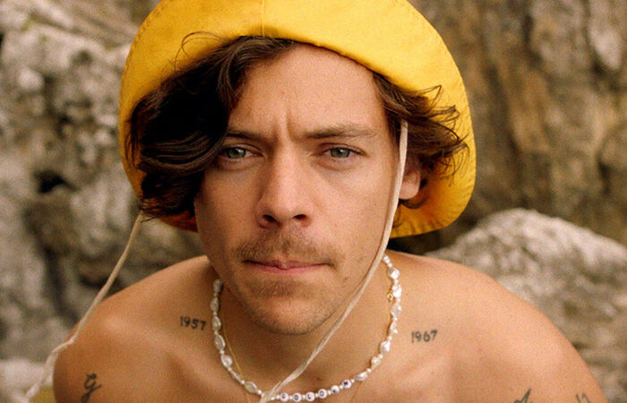
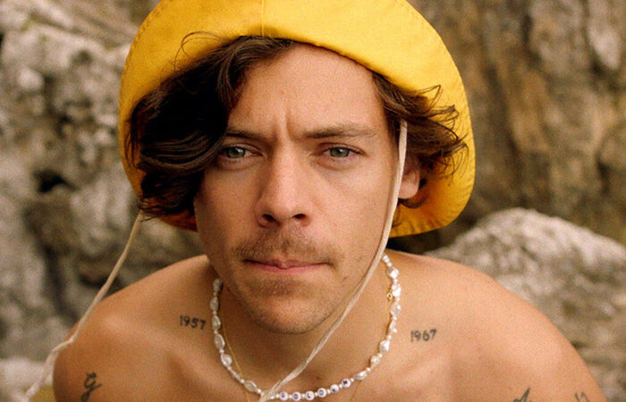
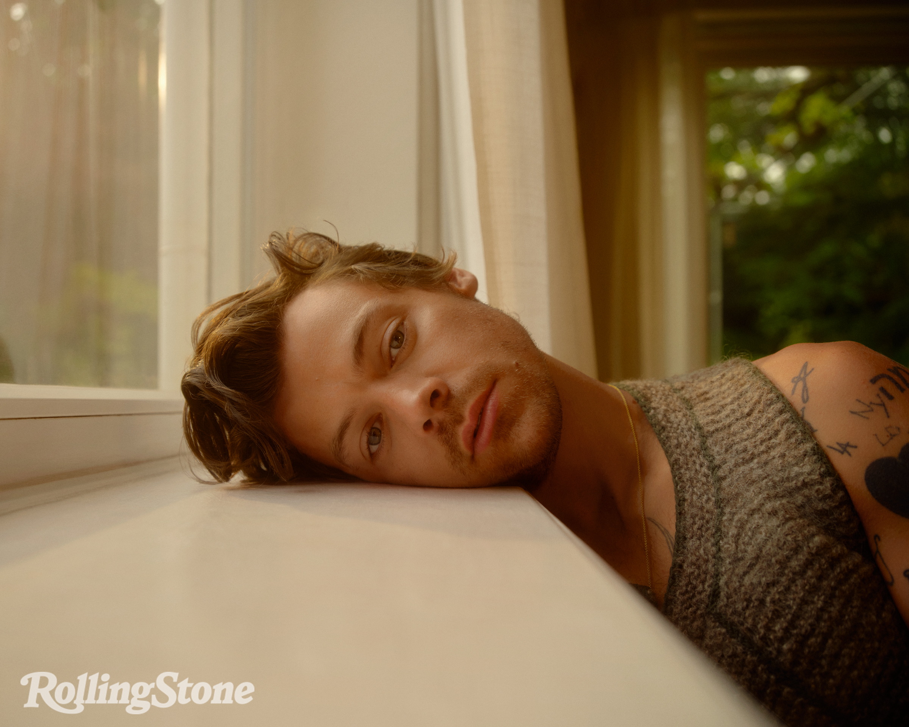
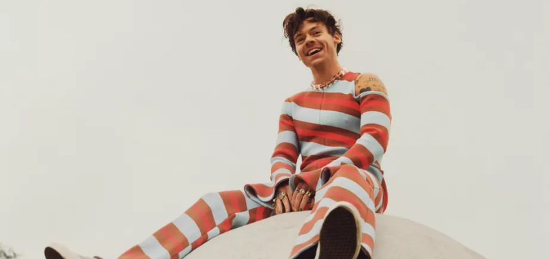
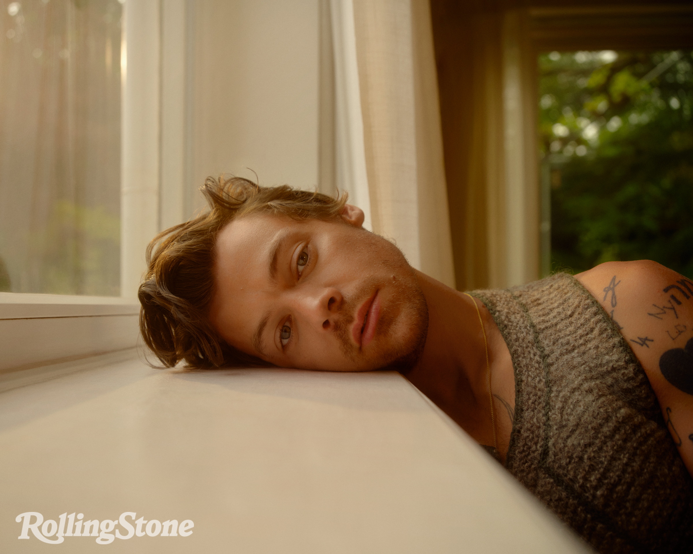
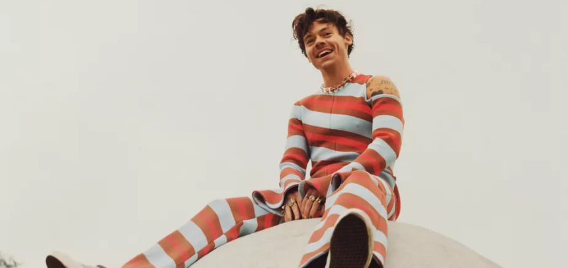
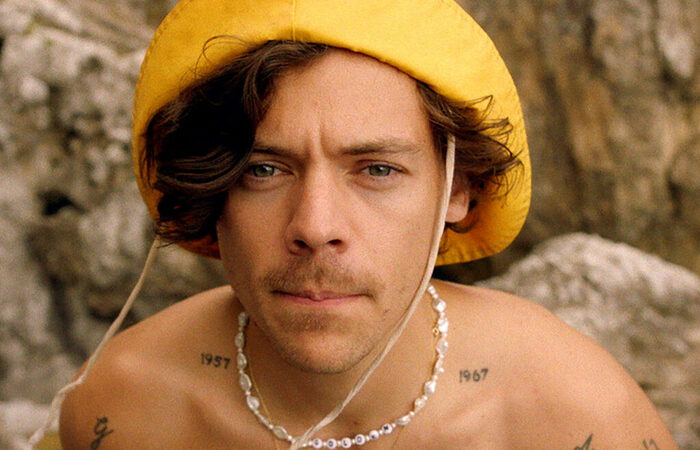
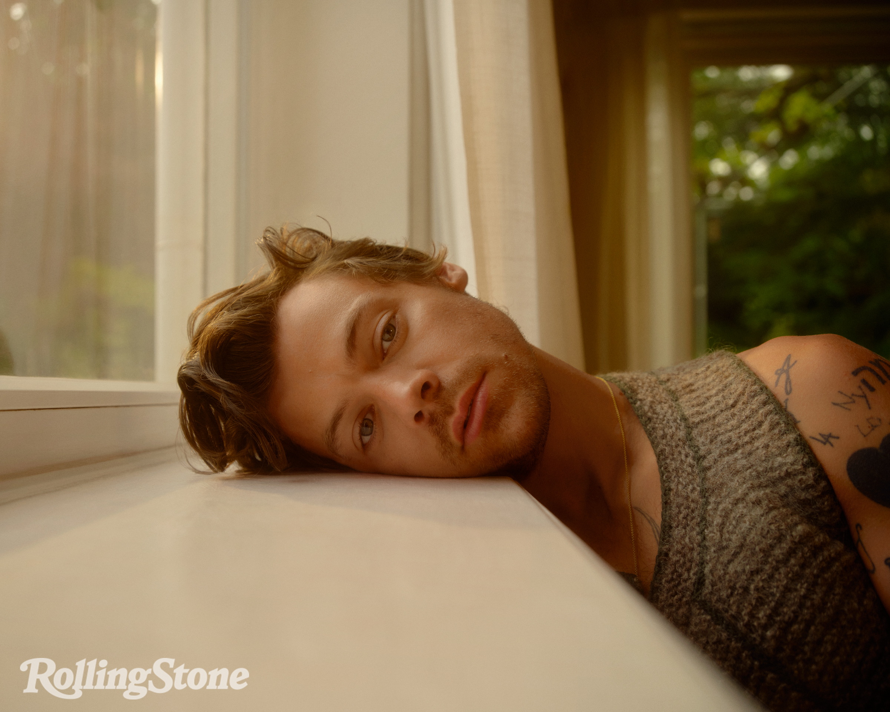
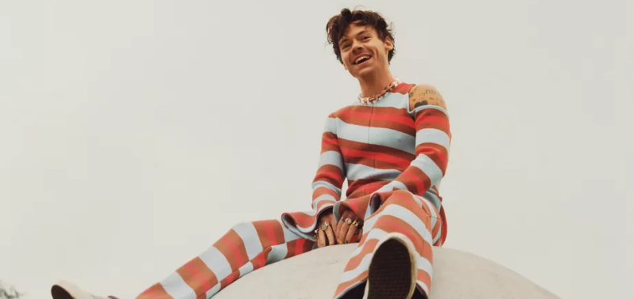

Galeria
 


 



Harry Edward Styles (Redditch, 1 de fevereiro de 1994) é um cantor, compositor e ator britânico. Sua carreira musical começou em 2010 como concorrente solo na série britânica de competição de música The X Factor. Após sua eliminação, ele foi trazido de volta para se juntar à boy band One Direction, que se tornou uma das boy bands mais vendidas de todos os tempos antes de entrar em um hiato indefinido em 2016.


